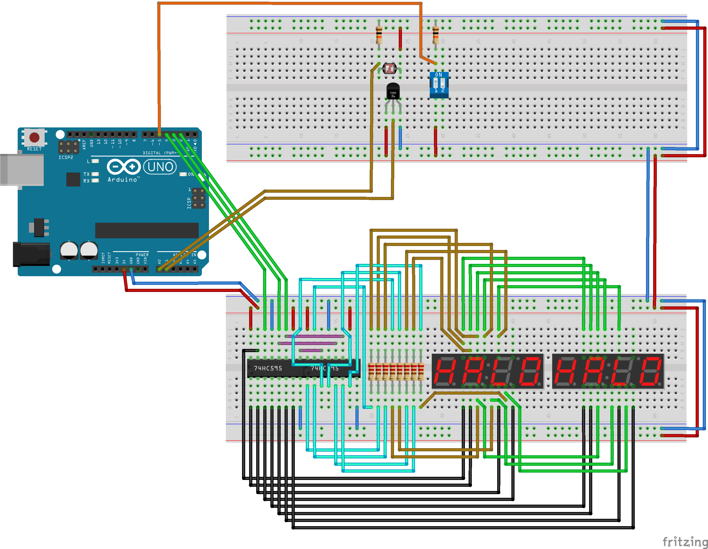
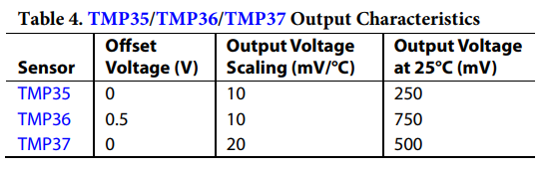
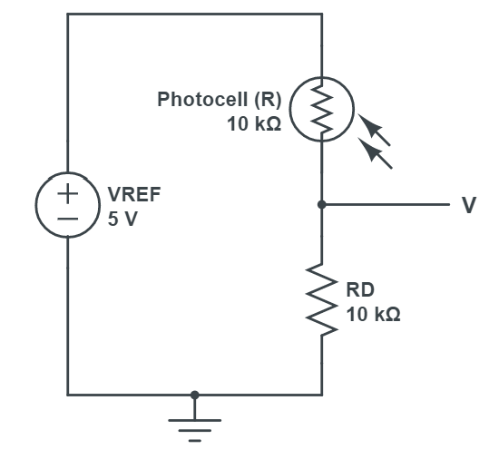

Worksheet Exercises
- analog
Task
We are to create a program to read from a temperature sensor and a light sensing circuit.
Hardware Setup
 Fritzing schematic: apsc160_analog.fzz| Component | Count |
|---|---|
| Full Size Breadboard | 2 |
| Photoresistor (approx. 10 kOhm - 30 kOhm) | 1 |
| Temperature Sensor (TMP36 or LM35) | 1 |
| Slide DIP Switch (2 or 4 positions) | 1 |
| 10 kOhm Resistor | 2 |
| Shift Register (74HC595, 14-DIP) | 2 |
| 4 digit 7-Segment LED Clock Display (Common Anode) | 2 |
| 220 Ohm Resistor | 8 |
| Spindle of Wire (22 Gauge Solid) | 1 |
Analog Value Conversion
To obtain meaningful results from our analog measurements, we need to convert the raw analog values that come out of the Arduino's analog-to-digital converter.Analog to Voltage
On the Arduino, theanalogRead(...) function returns a value
in the range of [0, 1023], where 0 corresponds to 0 V and 1023
corresponds to the reference voltage (5 V by default). Thus, to
convert the raw value to voltage, we must apply
$$V = \frac{a}{1023}V_\mathrm{ref},$$
where \(a\) is the raw analog value, and \(V_\mathrm{ref}\) is the reference
voltage of 5 V.
Temperature
The TMP36 temperature sensor has voltage-temperature characteristics described in the specifications sheet as  Thus, we can compute a temperature from the output voltage using the equation $$T = 100 (V - 0.5),$$ where voltage is measured in volts, and temperature in degrees Celsius. To convert Celsius to Kelvin, we add 273.15.
Illumination
The light sensing circuit is created using a voltage divider with a 10 kOhm resistor and a photocell (also referred to as a photoresistor).  The datasheet for the photocell specifies a linear relationship between the log of the resistance and the log of illumination: $$\log(L) = M \log(R) + b,$$ where \(L\) is luminance measured in lux, and \(R\) is the resistance of the photocell. The output voltage of the voltage divider is given by $$V = \frac{R_D}{R+R_D}V_\mathrm{ref},$$ where \(R_D\) is the 10 kOhm resistance, and \(V_\mathrm{ref}\) is the reference voltage of 5 V. Putting these equations together, we have $$L = \exp\left[M\log\left(R_D[V_\mathrm{ref}-V]/V\right) + b\vphantom{\sum}\right]$$ By measuring luminance in a variety of lightings using a free phone application, as well as the corresponding output voltages of the voltage divider, we experimentally determined the parameters for our particular photocell as \(M = -1.4\), \(b = 15.76\). These values may need to be calibrated for your photocell (e.g. see this tutorial).
Software Implementation
For this program, we provide a library to handle the displayWrite(...)
functionality, since this is not part of the Arduino API. This library assumes
the exact hardware configuration as given in the Hardware Setup
above.
- Header: DisplayWrite.h
- Implementation: DisplayWrite.c
To add these files to your program in the Arduino IDE, download them somewhere known on your computer, and go to "Sketch > Add File..." and select both files. In Visual Studio with Visual Micro, right-click on the project and select "Add > Existing Item..." to add the both the header and source files.
analog.ino